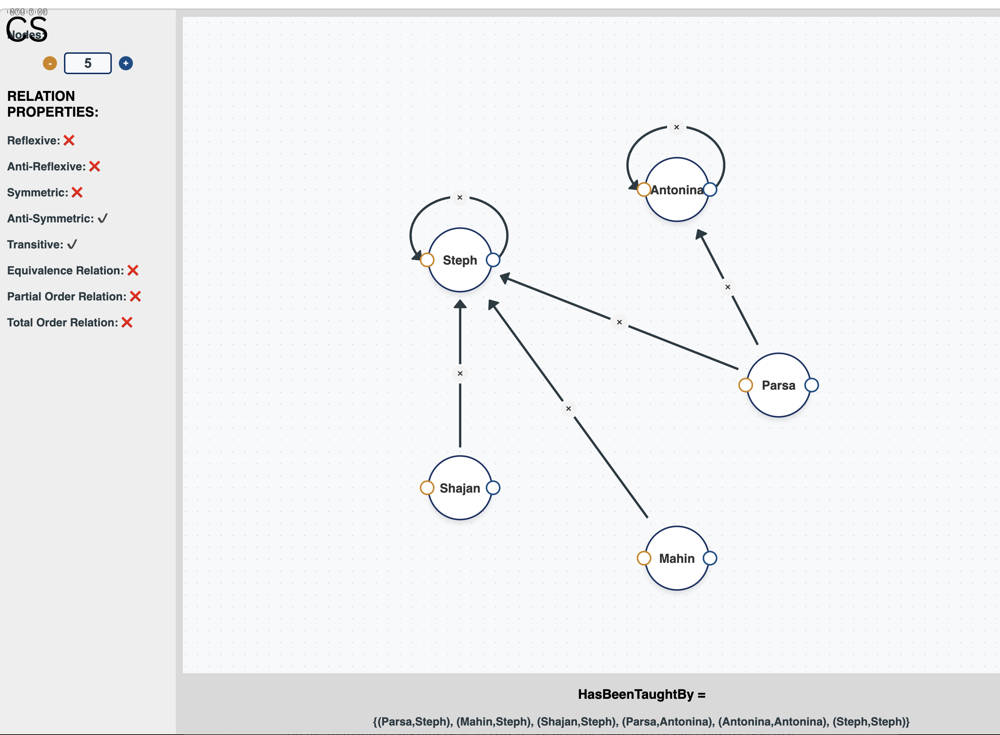

Game of Four
Fall 2023
Co-developed a desktop implementation of the Game of Four board game for COMP 2005. Video demo

Dec 2025 - Present
Co-developed a website featuring interactive visualizations of mathematical computer science concepts for logic and introductory theoretical computer science courses.

May 29-31, 2026
Co-developed a context-aware healthcare AI assistant that uses patient records and wearable-vital data to personalize health alerts.
Fall 2023
Co-developed a desktop implementation of the Game of Four board game for COMP 2005. Video demo
Spring 2022
Assisted Dr. McIntyre in developing proof-checking tools and interactive exercises. Repository